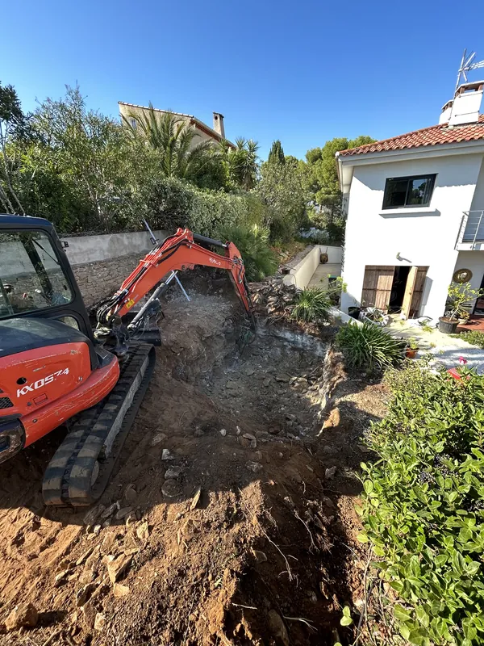
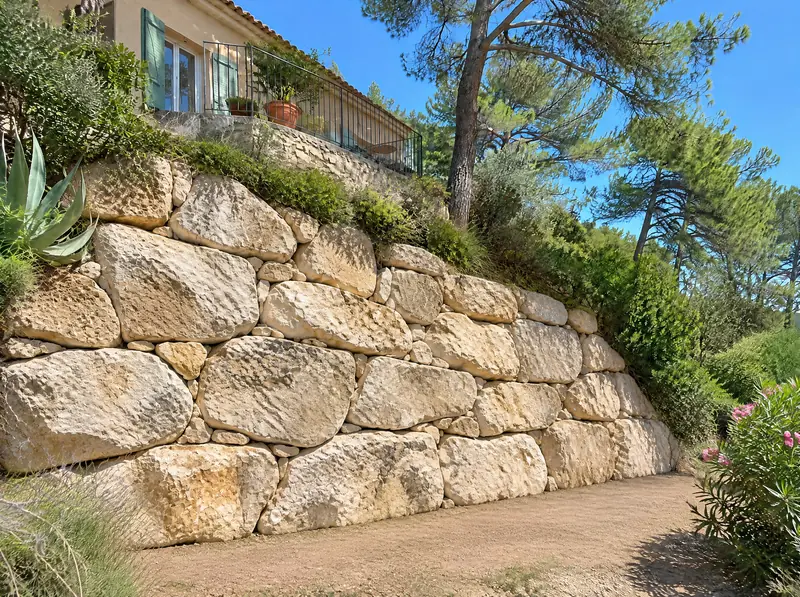
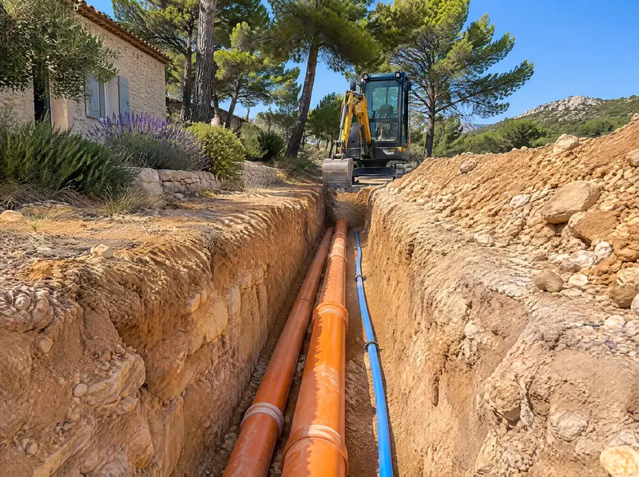
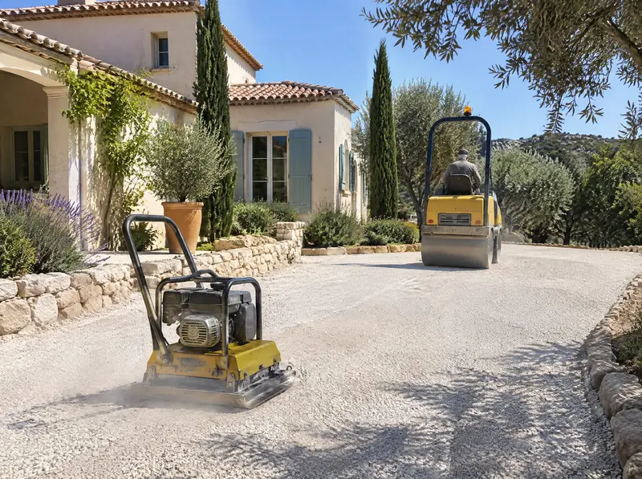
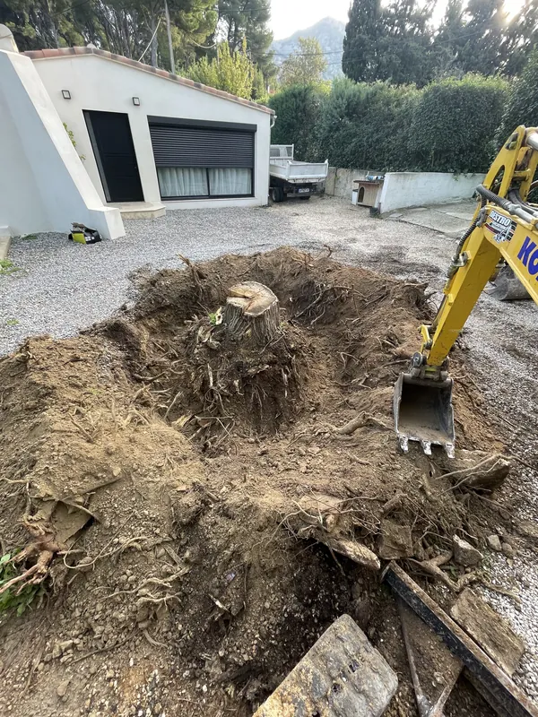
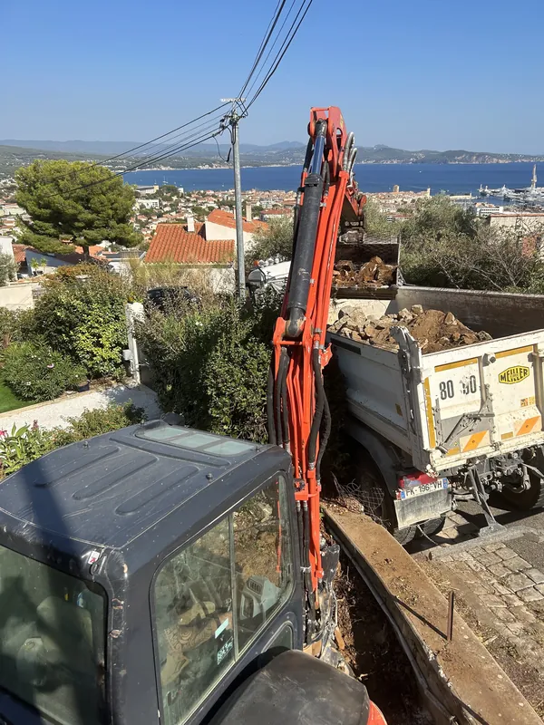
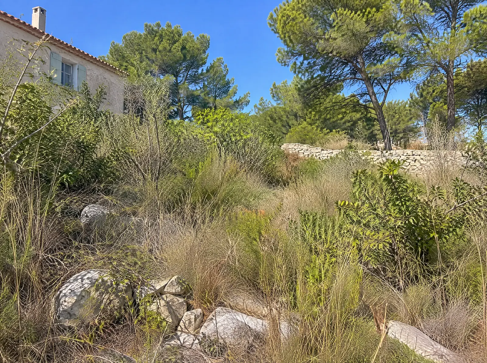

Terrassement, démolition et enrochement à Marseille
Des chantiers propres, même là où les engins passent difficilement.
- 5,0 sur Google, 14 avis
- DEVISgratuit et détaillé
- 7j/7joignable, même le week-end
- ACCÈSchantiers difficiles d'accès
Du premier coup de godet
au terrain propre.
Nous préparons, creusons, démolissons et stabilisons. Un seul interlocuteur pour tout le gros du chantier.
-

01Terrassement
Maison, extension, garage, terrasse : nous décapons, creusons les fouilles et mettons le terrain à niveau, au plus près de l'existant.
-
02
Terrassement de piscine
Nous creusons la fouille aux cotes de votre pisciniste : parois nettes, fond plan, terre évacuée. Votre jardin reste propre autour.
-
03
Démolition et évacuation
Annexe, abri, mur ou partie de maison : nous démolissons, trions et évacuons les gravats. Vous récupérez un terrain dégagé.
-

04Enrochement
Murs de soutènement en blocs de pierre pour tenir un talus, stabiliser une pente ou créer des restanques solides.
-

05Tranchées
Tranchées pour vos réseaux (eau, électricité, évacuations) et pour le drainage, creusées à la bonne profondeur puis rebouchées.
-

06Compactage
Compactage des fonds de forme et des remblais avant une dalle, une allée ou une terrasse, pour un sol qui ne bouge plus.
-

07Défrichement
Débroussaillage, défrichement et dessouchage : nous rendons un terrain envahi à nouveau exploitable.
-
08
Installation de fosses
Fosses septiques et fosses toutes eaux : terrassement de la fouille, pose de la cuve et remblaiement.
-

09Chantiers difficiles d'accès
Ruelle étroite, jardin en restanques, terrain en pente : nos engins compacts passent là où d'autres renoncent.
« Très bon travail sur un chantier avec fortes contraintes d'accessibilités. » Cyprien P., avis Google
Avant, après.
Faites glisser.

Avant AprèsDébroussaillage, dessouchage et mise à niveau d'un terrain en friche. Visuels d'illustration
Nos chantiers,
sur le terrain.
Pourquoi nos clients
nous recommandent.
Nous sommes une entreprise de terrassement installée à Marseille, dans le 9e. On nous appelle pour un terrain à préparer, une piscine à creuser, une annexe à démolir ou un talus à tenir, souvent là où l'accès est compliqué.
Notre façon de travailler tient en peu de mots : écouter, chiffrer honnêtement, laisser un chantier propre.
L'équipe V&P Terrassement
- 5,0/5
- note Google
- 14
- avis clients
- 7j/7
- joignables
Réactifs
Nous répondons vite et nous nous rendons disponibles pour caler le chantier.
Équipe sérieuse, professionnelle et réactive.
FredChantier propre
Nous travaillons soigneusement et nous repartons en laissant un terrain net.
Le travail a été effectué très proprement.
Pauline S.Devis honnêtes
Un devis clair, détaillé, sans ligne surprise à la fin.
Échanges très clairs, devis honnêtes !
Théo B.Accès difficiles
Pente, passage étroit, jardin enclavé : nous trouvons comment faire entrer l'engin.
Chantier avec fortes contraintes d'accessibilités.
Cyprien P.À l'écoute
Nous prenons le temps de comprendre votre projet, du devis à la fin du chantier.
Disponibles et à l'écoute tout au long du processus.
Théo B.
Votre chantier
en 4 étapes.
On creuse, couche après couche, jusqu'au terrain prêt pour la suite.
- 1
Visite et devis gratuit
Nous venons voir votre terrain, nous écoutons votre projet et nous vous remettons un devis clair.
- 2
Préparation et accès
Nous repérons les accès, choisissons l'engin adapté et protégeons ce qui doit l'être.
- 3
Terrassement ou démolition
Les engins entrent en action : fouilles, nivellement, démolition, enrochement, selon votre projet.
- 4
Évacuation, terrain propre
Terres et gravats sont évacués. Nous repartons en laissant un terrain net, prêt pour la suite.
Ce sont nos clients
qui en parlent le mieux.
« Prise d'informations rapide, échanges très clairs, devis honnêtes ! De vrais professionnels, qui ont su se rendre disponibles et à l'écoute tout au long du processus ! »
Théo B.« Travail impeccable, rapide et professionnel. Le terrassement de la piscine a été parfaitement réalisé. Je recommande sans hésiter ! »
Thomas S.« V&P Terrassement est intervenu pour la démolition et l'évacuation d'une partie de ma maison, le travail a été très bien réalisé avec beaucoup de professionnalisme, je recommande »
Julia V.« J'ai contacté V&P Terrassement pour la réalisation d'un enrochement pour ma maison, le travail a été effectué très proprement, je recommande vivement ! »
Pauline S.« Très bon travail sur un chantier avec fortes contraintes d'accessibilités. L'implication, le sérieux et l'écoute ont été au rendez-vous ! »
Cyprien P.« Très bonne expérience avec V&P Terrassement. Équipe sérieuse, professionnelle et réactive. Le travail a été réalisé proprement, dans les délais, avec un vrai souci du détail. »
Fred« Très contente du travail réalisé pour le terrassement chez moi ! Travail sérieux et soigné, tout s'est bien passé du début à la fin. »
Victoria B.
Marseille
et alentours.
Depuis le 9e arrondissement, nous intervenons dans tout Marseille et les communes autour :
- Marseille
- Aubagne
- Cassis
- La Ciotat
- Allauch
- Plan-de-Cuques
- Aix-en-Provence
- Vitrolles
- Marignane
Votre commune n'y est pas ? Appelez-nous, nous vous disons tout de suite si c'est possible.
Carte © contributeurs OpenStreetMap
Parlez-nous
de votre terrain.
Devis gratuit. Décrivez votre projet en une minute, nous vous rappelons rapidement.
06 26 60 81 43- Joignable 24h/24, 7j/7
- 49 av. du Maréchal de Lattre de Tassigny, 13009 Marseille
- contact@vp-terrassement.fr